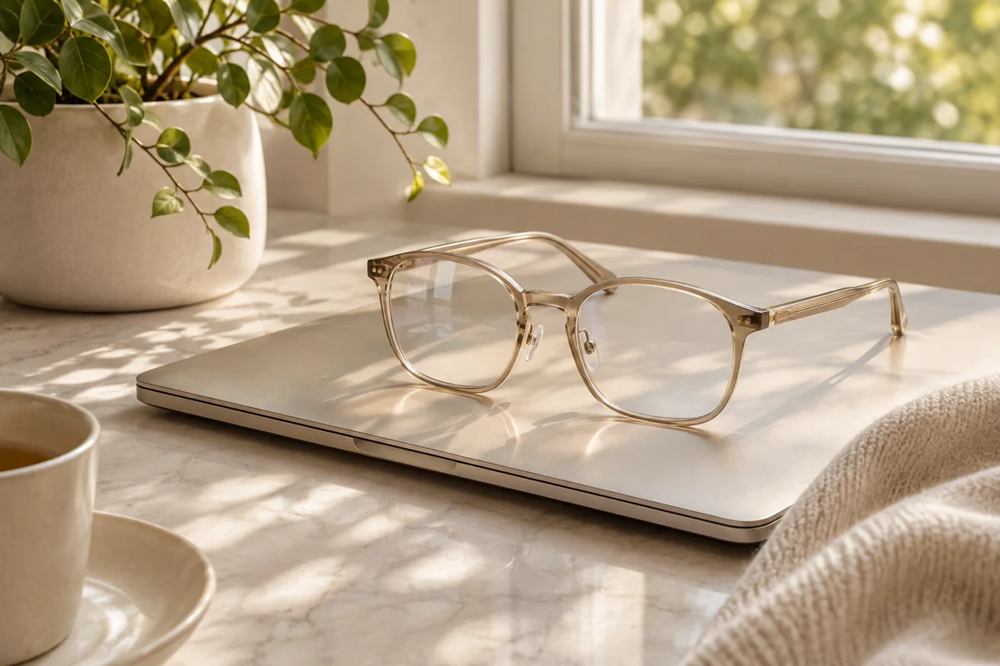

Style & fit · 5 min read
How should your glasses really fit?
The small details that make a frame feel right from morning to evening.
Read the storyFRAME CARE / THE OCULIS JOURNAL
A few thoughtful habits can make caring for your favourite frames feel like second nature.
Independent spirit. A personal perspective.
Eyewear, thoughtfully considered.
Your glasses go everywhere you do. A little everyday attention helps keep them ready for whatever comes next.
Dust and grit can collect on your lenses during the day. Before wiping them, rinse away loose particles with lukewarm water. Use a cleaner suitable for your particular lenses and a clean microfiber cloth, following the care advice supplied with your glasses.
Avoid using the hem of a shirt or a paper towel. A dedicated cloth, washed regularly without fabric softener, is a simple addition to your everyday routine.
When you take your glasses off, put them in a protective case. Keep the case away from direct heat, and avoid leaving your eyewear on a car dashboard or beside a hot appliance.
If your glasses slide, pinch or sit unevenly, ask an optical professional for an adjustment. Small fit changes are best handled with suitable tools and an understanding of the frame material.
Keep a case and cloth where you naturally put your glasses down. Simple, repeatable habits make it easier to look after a pair you enjoy wearing.
Original general information for a fictional demonstration journal. For personal eye-health questions, speak with a qualified eye-care professional.
YOUR EVERYDAY CHECKLIST
KEEP YOUR CURIOSITY
Style & fit · 5 min read
The small details that make a frame feel right from morning to evening.
Read the storyLens guides · 6 min read
A friendly introduction to lens choices, coatings and everyday needs.
Read the story
Eye wellness · 4 min read
Build a more comfortable workday with thoughtful breaks and lighting.
Read the story